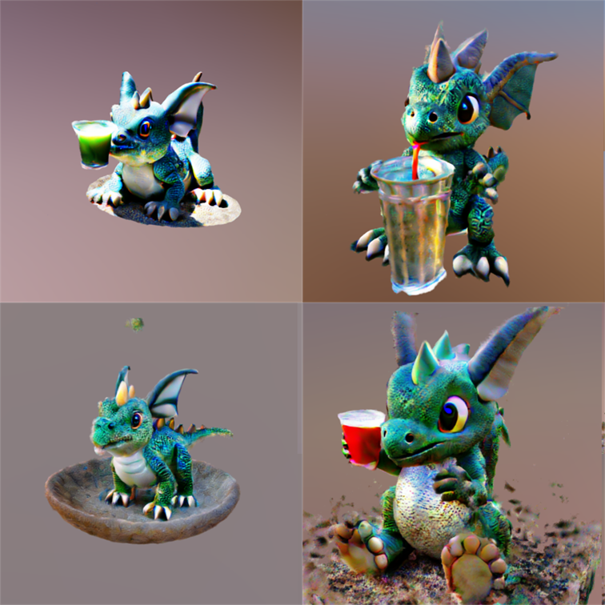

I am a fourth-year undergraduate student in Tsinghua University, Institute of Interdisciplinary Information Sciences (Yao Class).
I am interested in machine learning, computer vision, and robotics.
Publications
Consistent Flow Distillation for Text-to-3D Generation Runjie Yan, Yinbo Chen, Xiaolong Wang
arxiv.
webpagepapercodebib
Unique3D: High-Quality and Efficient 3D Mesh Generation from a Single Image
Kailu Wu, Fangfu Liu, Zhihan Cai, Runjie Yan, Hanyang Wang, Yating Hu, Yueqi Duan, Kaisheng Ma
arxiv.
webpagepapercodebib

Flow Score Distillation for Diverse Text-to-3D Generation Runjie Yan, Kailu Wu, Kaisheng Ma
arxiv.
paperbib